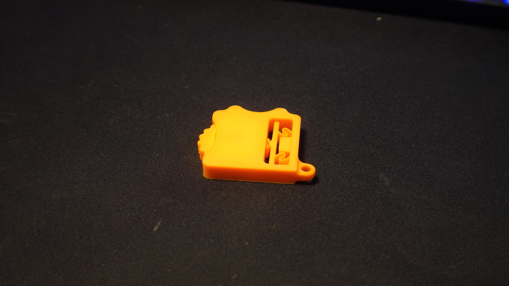
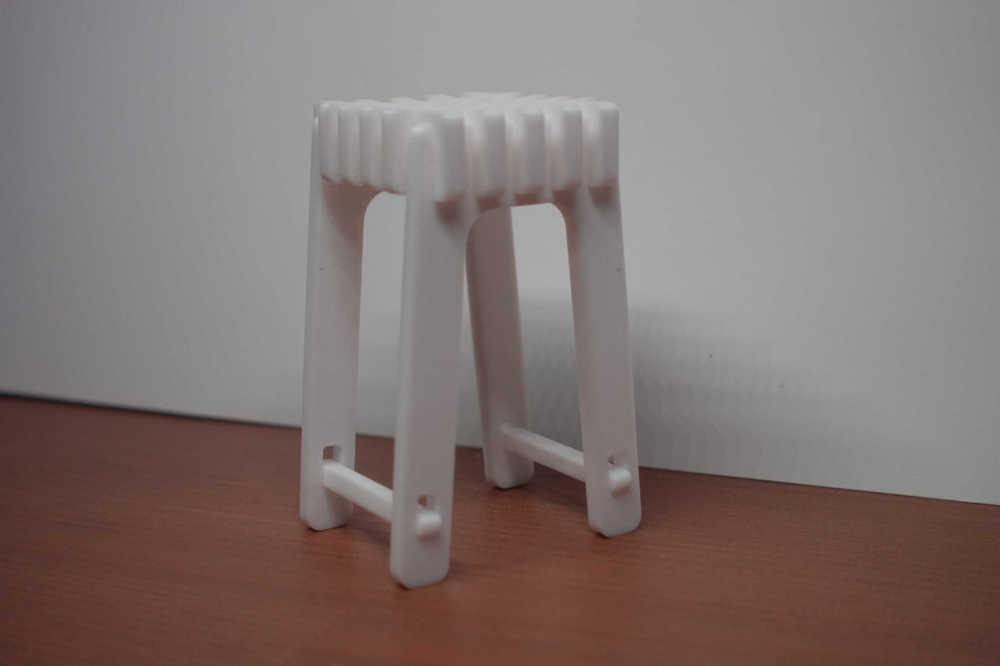

PO3 - Flatpack furniture - Comfortabele stoel
Marktonderzoek + brainstorm
Ik begon mijn onderzoek door op Pinterest te zoeken naar 'flatpack furniture'. Al snel vond ik veel stoelen, banken en tafels in die stijl. Twee foto’s spraken me aan: een tafel met vier stoelen eraan vast, en een ligstoel met elastische banden voor comfort. Daarna maakte ik ontwerpen in Fusion360 zonder een specifiek materiaal te kiezen, zodat ik later de ontwerpen kon printen en op materialen plakken. Ik brainstormde met Lynden en Yonah (Dean hielp ook een beetje, maar wij deden het meeste). Uiteindelijk besloot ik een comfortabele ligstoel van hout te maken, geïnspireerd door een houten stoel met zwarte banden. Ik koos hout omdat het goedkoop, makkelijk te bewerken en mooi is. Ook deed ik onderzoek naar stoelen voor ouderen, en kwam uit op lig- en verstelbare stoelen. Een nadeel van mijn stoel is dat hij laag is, wat lastig kan zijn voor mensen met rugklachten, maar ik zie het vooral als een comfortabele ligstoel.
Vormstudies + Beginontwerpen
Ik had veel tijd besteed aan het maken van ontwerpen en het doen van onderzoek, waardoor ik wat later begon met het uitvoeren van de tests. Uiteindelijk heb ik de tests 3D-geprint (aanvankelijk was ik bezig met een houten versie, maar ik had thuis niet de juiste gereedschappen om die af te maken). Ik koos voor 3D-printen, vooral vanwege de complexe geometrie die moeilijk op schaal met de hand te maken is in vergelijking met printen. Hoewel dit misschien klinkt alsof ik hierdoor minder tijd in het project heb gestoken en 'lui' was, heb ik de tijd die ik niet aan het maken besteedde, juist gebruikt om het ontwerp verder te perfectioneren. Ik heb als 3 stoelen 2 krukken gemaakt, en 1 ligstoel (De ligstoel is uiteindelijk ook een beetje veranderd en het eindontwerp geworden.)

Eindontwerp + Reflectie
Voor mijn eindontwerp heb ik een ligstoel 3D-geprint en vervolgens oud plastic materiaal gebruikt. Dit heb ik zo gesneden dat ik het kon buigen voor een mooie, afgeronde en vloeiende vorm. De verbindingen waren niet perfect ontworpen, waardoor ik wat lijm moest gebruiken om alles goed vast te krijgen. Maar als je erover nadenkt, is er bij een stoel met houtverbindingen ook een grote kans dat die niet goed blijft zitten zonder lijm (anders kan het na verloop van tijd losraken of gaan rammelen). Ik heb mijn best gedaan voor dit project en vond het leuk om te ontwerpen en idee√´n uit te wisselen. Wat ik wel jammer vind, is dat mijn Chromebook net te traag is om Fusion360 in de les te gebruiken en ik nog geen laptop mag kopen, omdat er nog veel kan veranderen tegen de tijd dat ik ga studeren. Ik denk dat ik het project ook zonder 3D-printen had kunnen afronden, maar door afleiding in de les kwam ik uiteindelijk in tijdsnood. Ook had ik de connecties wel wat beter kunnen makenüòÖ. Ter extra informatie, mijn eindontwerp was de ronddraaiende gif linksbovenin bij de fotos. !! Ik lever mijn houtverbindingen-onderzoek nog apart in !!

Brainstorm + houtonderzoek
 ← Terug naar Portfolio
← Terug naar Portfolio